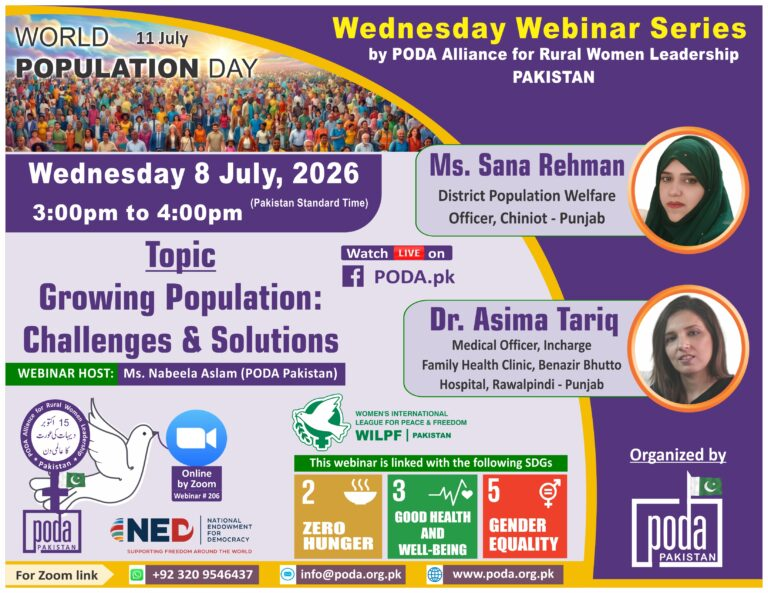
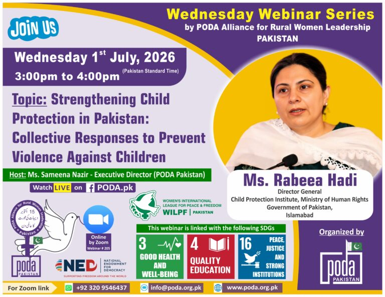
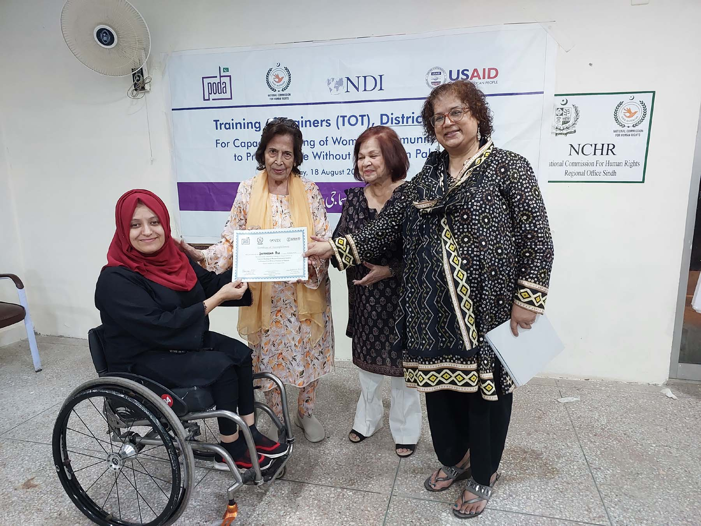
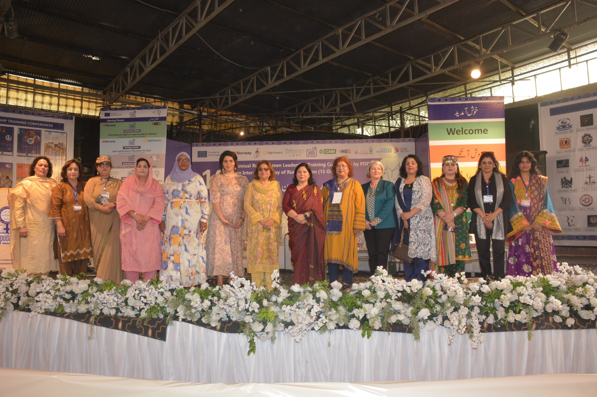
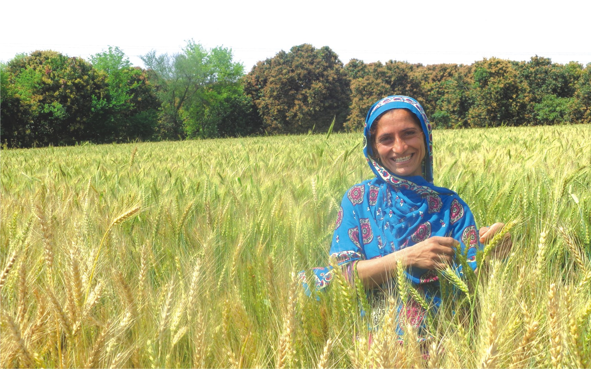

Every Wednesday webinar and major field visit, on camera — from policy conversations with PARWL-Pakistan to PODA's teams at work in the community.





Donate, get free legal aid, or intern with PODA's field teams.